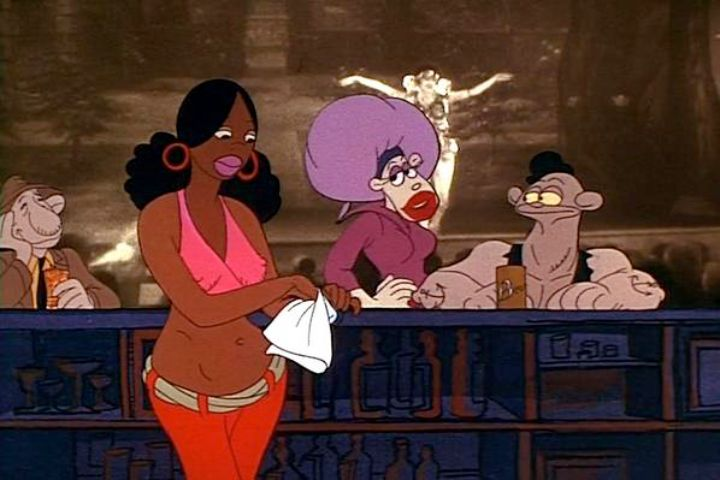

Ralph Bakshi is a divisive, but iconic, animation director. But of all his films, which are the most important to watch? Do you start with his early and XXX-rated "Fritz the Cat"? Or the fantasy-movie "Wizards"? Or the more standard but still influencial adaption of "The Lord of the Rings"? While I respect Bakshi as an artist, I figure you can ignore most of his movies entirely, as they aren't all that great beyond the portrayal of underground, seedy, blue-collar America. But the two movies you SHOULD see, each representing his skills as an artist, are "American Pop," and "Heavy Traffic."Released in 1973, "Heavy Traffic" was an early movie for Bakshi, released right after "Frtiz." It represents his more controversal side, while also being deeply personal. As a movie, it's not all that great either, but I'd proudly defend it as being a work of art. More than any other movie, this would be the best contender for the label of Bakshi's "magnum opus." A quick summary of the synopsis is that the main character is Michael, a young adult striving to be a comic artist (in the 70's, when edgy and off-putting art was starting to become trendy, but still a difficult sell to the old fat cats still running the publishers). He still lives with his very Jewish parents in a tiny condo, trying to work while his deadbeat dad argues with his selfish mother (the two frequently try to kill each other, quite lterally). Michael also has a on/off girlfriend named Carole, a black sex-worker (remember, mixed-race relationships wasn't all that common back then). There isn't much of a plot beyond that, other than Michael getting an appointment to show his work to one such publisher, ending in failure. But even without a plot, we get to see Michael exploring his home of New York City, meeting all the regulars, all background characters with wild personalities. There's the crazy drug addict on the roof, a transvestite that can barely hide their junk in their panties, and a variety of other criminals and undesirables. Michael's a virgin, partly due to shyness or poor opportunity, and deals with old bullies that still tease him for it (and a father that arranges a very large woman to sleep with him as a gift). Explicit nudity, inexplicit sex of all types, drugs, and foul language (the "N"-word is uttered a fair bit, an example where such a movie could never be made today) abounds all over. Bakshi tends to like controversal content for the sake of it, but "Heavy Traffic" justifies itself by giving empathy to its bizarre characters. There are several scenes here that could be considered "classic" moments of cinema, easy to quote should a documentary on Bakshi's work ever be made. The 2D characters are also often overlayed over real photographs of the setting, partially a measure to save money, but also an effective trick to make the setting feel real, despite the exaggeration. New York City is a fully-fledged character alongside the human-people, and every character is worthy of a detailed essay on them. This all comes to a head in a effective ending scene that relies entirely on live-action.I suspect most, if not all, of the movie is inspired by Bakshi's own experiences as a cartoonist, and growing up in New York. More than any of his other movies, it feels personal, like a biography about him and the people he knew, hidden in a fictional film. Apparently, this was the first movie Bakshi originally wanted to make, but he struggled to find financing, and a poor relationship with the producer he did pair with made production seem like a nightmare.Of course, if you've never seen a Bakshi picture before, you might be horrified and offended when trying to watch "Heavy Traffic." For that matter, that's true for most of his movies. But there's always a purpose to it with "Traffic," and it's a good culmination of everything the director is known for. Truly, I believe this is a great work of art that all animation historians should consider mandatory viewing. If you want a more typical movie instead of art, I'd recommend "American Pop."
- "Ani" More reviews can be found at : https://2danicritic.github.io/ Previous review: review_Heaven's_Memo_Pad Next review: review_Hells